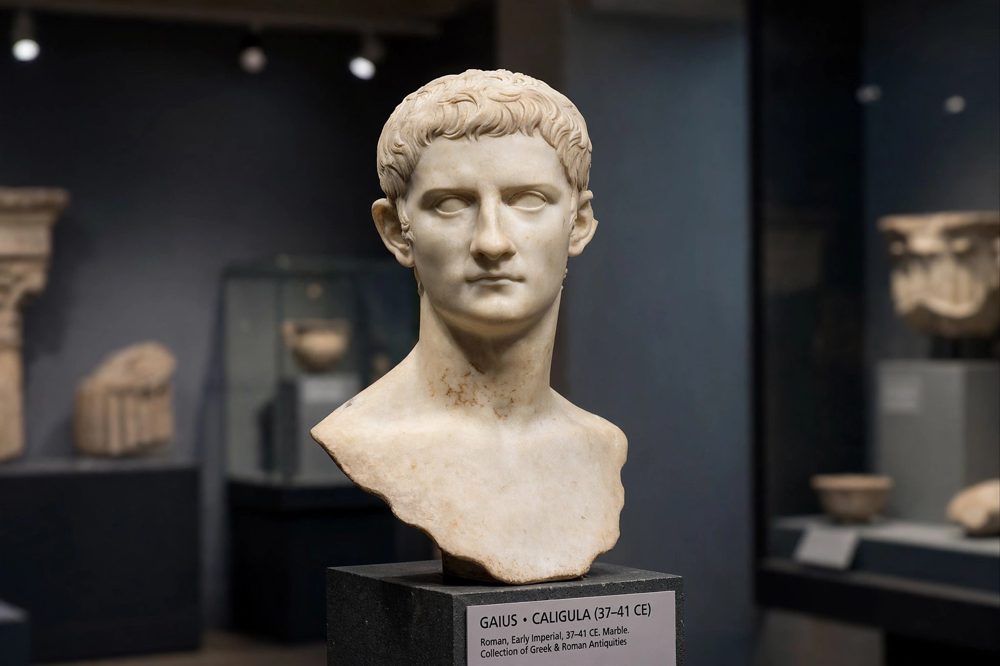

Gaius Caesar Augustus Germanicus (31 August 12 – 24 January 41), better known by his nickname Caligula, was Roman emperor from 37 to 41, the third emperor of the Julio-Claudian dynasty.
| Caligula | |
|---|---|
 | |
| Reign | 18 March 37 – 24 January 41 |
| Predecessor | Tiberius |
| Successor | Claudius |
| Born | 31 August 12, Antium |
| Died | 24 January 41, Rome |
| Father | Germanicus |
| Mother | Agrippina the Elder |
Gaius was the third son of Germanicus, a popular general, and Agrippina the Elder, granddaughter of Augustus. As a small child accompanying his father on campaign in Germania he wore miniature soldier's boots — caligae — earning the nickname Caligula, "little boots". After Germanicus died in 19 and Agrippina fell foul of Tiberius, Gaius survived purges that killed his mother and elder brothers and was summoned to Capri in 31.
On Tiberius's death in 37 the Senate and people enthusiastically acclaimed Gaius. His first months were marked by generosity, recall of exiles, and public games. After a serious illness in late 37, ancient sources describe increasingly erratic and cruel behaviour: executions, extravagant building, the planned bridge at Baiae, an abortive expedition to Britain, and conflict with the Senate. Stories that he made his horse Incitatus a senator are likely embellished by hostile historians such as Suetonius, Tacitus and Cassius Dio, but his autocratic style is not in doubt.
On 24 January 41 Caligula was assassinated in a conspiracy involving officers of the Praetorian Guard, notably Cassius Chaerea, and senators. His wife Caesonia and daughter were also killed. The Senate debated restoring the Republic before the Praetorians proclaimed his uncle Claudius emperor. Modern historians debate how much of the tradition reflects madness, illness, or senatorial propaganda.
Recreated from memory.